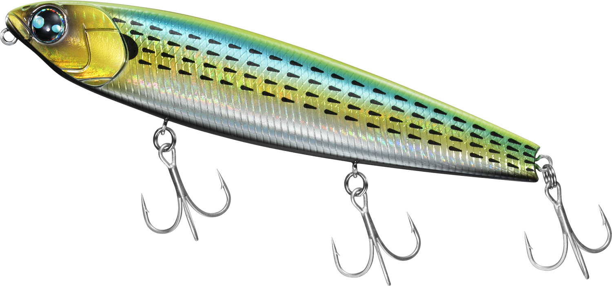
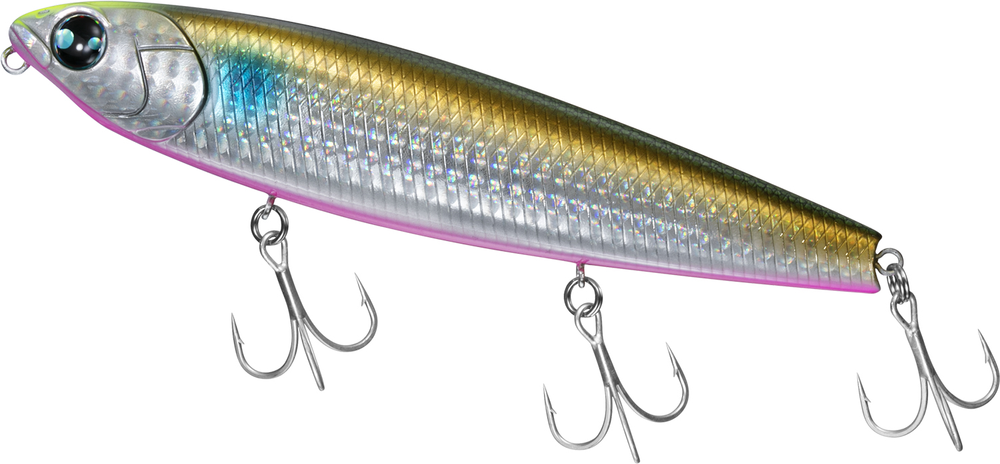
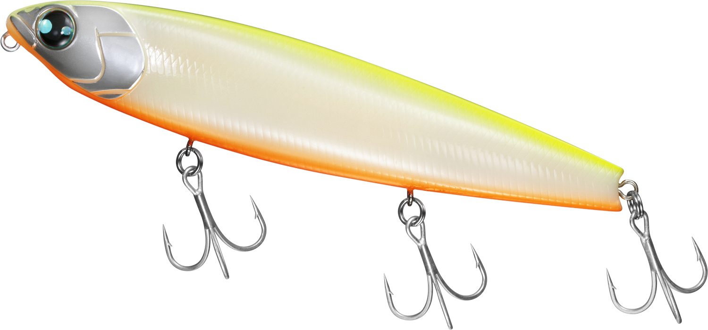
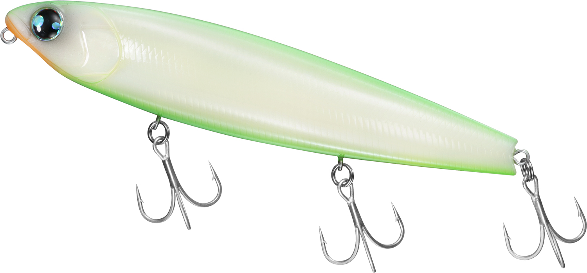
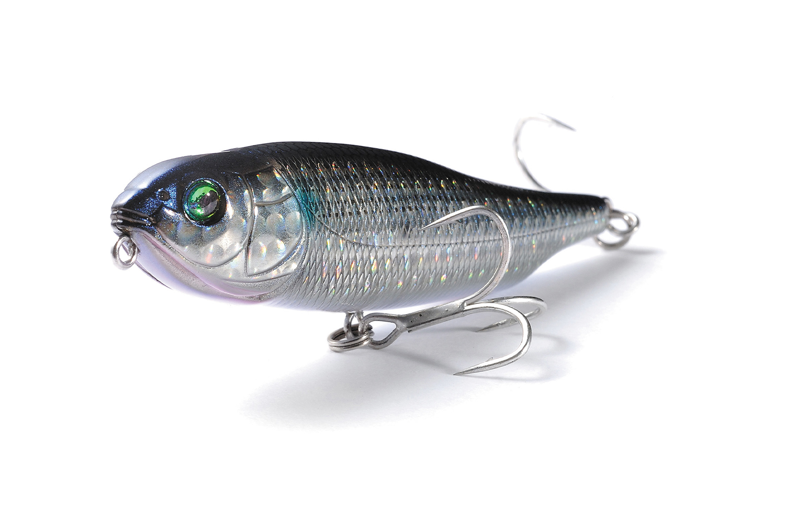

モアザン トリックアッパー R
（MORETHAN TRICK UPPER R）
モアザン トリックアッパー Rは、ダイワのシーバス用トップペンシルです。
小沼正弥さん監修の「トリックアッパー」に、重低音のラトルサウンドを加えた高音響モデル。カップマウスと立ち姿勢で、連続トゥイッチだけでイレギュラーなパニックアクションが簡単に出るのが最大の魅力です。65F・105F・130Fの3サイズがあります。

画像出典:DAIWA公式HP
スペック
- メーカー
- DAIWA（ダイワ）
- 監修
- 小沼正弥
- サイズ
- 65mm／105mm／130mm
- 自重
- 5.9g（65F）／16g（105F）／30g（130F）
- タイプ
- フローティング
- フック
- #10（65F）／#3（105F）／#4（130F）
- リング
- #2（65F）／#4（105F）／#3（130F）
- アクション
- ダイブ＆ウォーク、パニック（65F・105F）
ドッグウォーク、パニックダート（130F） - ターゲット
- シーバス・チヌ
- 価格
- 1,700円（65F）／2,000円（105F）／2,200円（130F）（税抜）
▼今すぐチェック
モアザン トリックアッパー Rの特徴
水面を叩く音と重低音ラトルで寄せる、トリッキートップペンシル
-
カップマウス×立ち姿勢で音と泡を出す
ボーン素材のボディと大径ラトルウエイト、カップマウス、立ち姿勢の組み合わせで、激しいサウンドとスプラッシュを出す。マウスカップが生む泡の軌跡が魚を寄せる。
-
重低音ラトルで集魚力アップ
水面を叩きつける音に、重低音のラトルサウンドをプラス。音で魚を寄せて、シーバスの捕食スイッチを入れる。
-
簡単に出るパニックアクション
連続でトゥイッチするだけで、イレギュラーな動きとダイブ、トリッキーな動きが混ざったドッグウォーク＝パニックアクションが出る。移動幅が大きすぎないので、狙ったポイントで長く誘える。
モアザン トリックアッパー Rの使い方
キャストしたら、ロッドで連続してトゥイッチを入れ、パニックアクションを出すのが基本です。
ゆったり動かしてラトル音と泡で周りの魚を寄せ、反応が出たら速いトゥイッチでパニックアクションに切り替えて食わせるのも効果的。流れのある場所では、流れに乗せてピンスポットへ送り込み、ワンアクション入れて食わせましょう。
モアザン トリックアッパー Rの得意な状況
シーバスが水面を意識している夏から秋や、朝夕のマズメに出番です。
音とスプラッシュで広い範囲の魚を寄せて、ピンスポットでも移動しすぎずに誘えるのが強み。小さな65Fはチニングにもおすすめで、トップでチヌが釣れます。
ワンポイント
サイズはベイトの大きさと釣り場の広さで選ぶのがコツです。港湾や河川の明暗は105F、広いエリアや大きめのベイトには130F、チヌや小さなベイトには65Fが使いやすいです。
トリックアッパー Rのサイズの使い分け
| モデル | 全長／自重 | 得意な場面 |
|---|---|---|
| 65F | 65mm／5.9g | 小さなベイトやチニング。ダイブ＆ウォーク、パニック |
| 105F | 105mm／16g | 港湾や河川のシーバス。ダイブ＆ウォーク、パニック |
| 130F | 130mm／30g | 広いエリア・大きめのベイト。水平気味の立ち姿勢でドッグウォークしやすい |
130Fは立ち姿勢を水平気味にして、ドッグウォークのしやすさを追求したモデル。迷ったら、港湾や河川で使いやすい105Fから始めるのがおすすめ。
人気カラー
モアザン トリックアッパー R 130Fの人気カラーを紹介します。

アデルライムコノシロコノシロを食べている大型シーバスに。

チャートヘッドイナッ子ピンクベリーイナッコパターンに。チャートヘッドでよく目立つ。

チャートバックボーンボーン素材の透け感にチャートバック。夜や朝夕に。

ライムボーンサンドライムとボーンの組み合わせ。にごりでもよく見える。
画像出典:DAIWA公式HP
▼今すぐチェック
モアザン トリックアッパー Rに似ているルアー
-

ジャイアントドッグX SW メガバス 詳細はこちら＞ヒラ打ちを伴うドッグウォークのペンシル。フラッシングで見せたい時に。
-
 ズバット105F
パズデザイン
詳細はこちら＞
ズバット105F
パズデザイン
詳細はこちら＞
高浮力のトップウォーターペンシル。シーバスやチヌを水面で狙う時に。
-
 プガチョフコブラ60
アイマ
詳細はこちら＞
プガチョフコブラ60
アイマ
詳細はこちら＞
クロダイ用の小さなトップウォーター。チニングで比べたい時に。